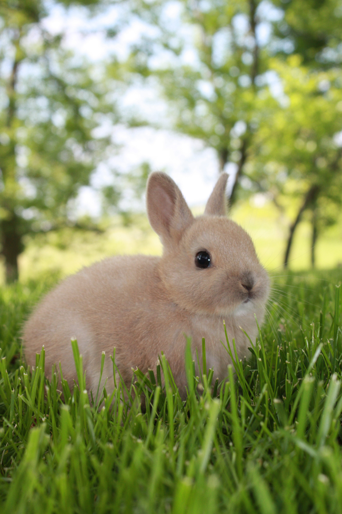
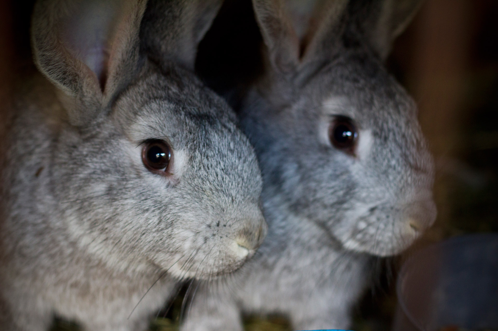
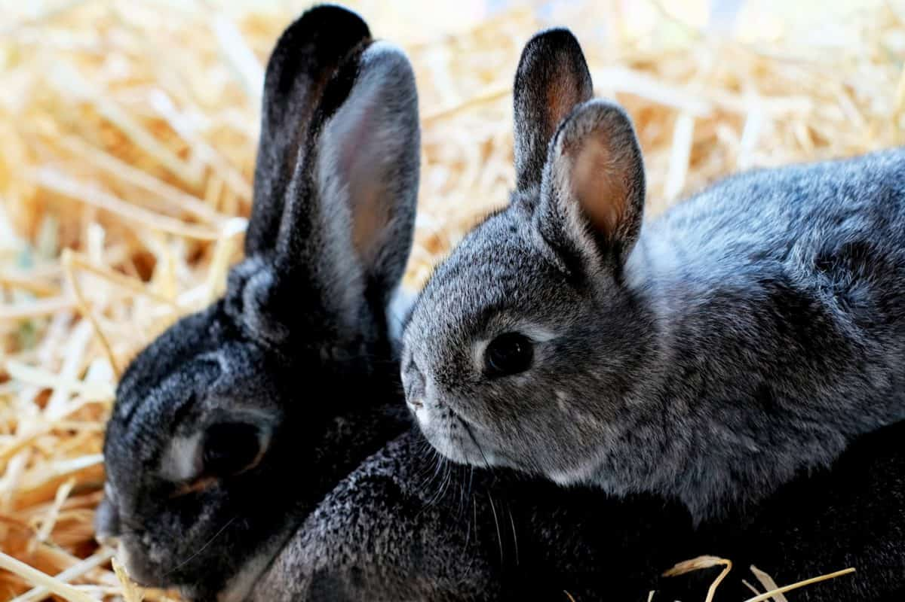

Kaninen Svörfuður
Vurdering: 10/10
Sett noe så koselig? Neppe. Kaninen Svörfuður er tidenes Ladies Man. Hans pels er som strøket av Michelangelos hånd, og ørene er formet som et Amen mot himmelen. Hans mørke øyne får Svörfuður til å bli regnet som 'Tall, dark and handsome', trass hans lyse pels og lave høyde.
Angora

Vurdering: 3/10
Angora er et helvetesbeist fra dypeste avgrunn. Fillete ører og rubinfargede sjelløse øyne er karakteristikkene som trekker ned her. Angora får pluss for sin runde form og tilsynelatende myke og varme pels.
Europa & Asia
Vurdering: 8/10
Europa og Asia er søsken, og mamma Moons store stolthet. Tvillingene har store, runde og spisse ører, runde ansikter med sukkersøte små neser. De har kortere pels enn mange andre kaniner, og kroppene er litt tynne, så dette trekker ned poengsummen litt. Mer å ta i, mer å være glad i gjelder her.
Ahmed & Monica
9/10
Dette interrasiske paret er noe alle fra den eldre generasjonen ikke klarer å motstå. Ahmed og Monica har fått flere priser for sitt samliv i det moderne samfunn. Ahmed har svart og grå tykk pels, dype svarte øyne og fortenner Monica elsker. Monica er liten og lys, kjempemyk pels og god spenst i beina, noe Ahmed falt for med en gang.